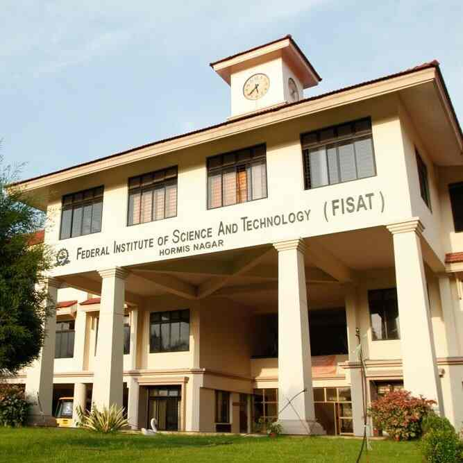
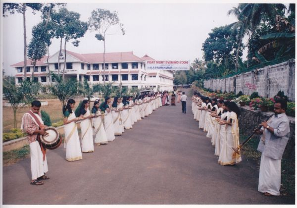

A quarter-century of FISAT.
A Silver Jubilee moment to celebrate the people, learning and milestones that shaped the institution.
FEDERAL INSTITUTE OF SCIENCE AND TECHNOLOGY
Shaping the next 25 through knowledge, innovation, technology and people.
Years of excellence
Alumni (placeholder — verify)
Placement offers · Class of 2026
Students
* Placement figure shown from the existing content baseline. Alumni figure is a presentation placeholder and should be replaced with a verified official figure before publication.
A Silver Jubilee moment to celebrate the people, learning and milestones that shaped the institution.
Date to be confirmed. Replace DATE in index.html with the official celebration date.
Placeholder for verified Silver Jubilee events, commemorative programmes and announcements.
Explore the journey →MORE THAN A CAMPUS
FISAT combines academic learning, technology, campus life and industry interaction in an environment designed to help students grow.
THE LEGACY
From classrooms and laboratories to student activities and research, FISAT brings multiple dimensions of campus life together.
THE PRESENT
Explore facilities, library resources, industry interaction, sports, hostel life and student activities.
THE FUTURE
Innovation spaces, future skills and student-led ideas create a bridge from today's education to tomorrow's opportunities.
Hormis Nagar, Mookkannoor, Angamaly. Approved by AICTE New Delhi & affiliated to APJ Abdul Kalam Technological University (KTU), Thiruvananthapuram. See The Institution, Location and Contact Us on the official site.
Read the official statements on Vision and Mission, plus the Newsletter for institutional updates.
People and bodies behind FISAT: People Behind · Governing Body · Academic Council · The Principal · Faculty · Administration · Careers
Approvals · Mandatory Disclosure · IQAC · NIRF · UGC Compliance · ARIIA Rankings
EXPLORE
HAPPENING NOW
EEE · Guidance on French higher-education pathways, scholarships and research options.
Read story →ME · Hands-on finite-element analysis training from design to simulation.
Read story →ISTE · Building a professional profile and employability presence early.
Read story →18 Nov 2026 · Researchers invited to submit papers across tracks.
View event →13 Oct 2026 · Five-day skill program with practical simulation sessions.
View event →30 Sep 2026 · Info session on study, funding and research routes.
View event →Headlines follow the style of the official FISAT homepage. Connect each card to its official news URL before publishing.
HAPPENINGS AT FISAT
CAMPUS FILM
Take a visual tour of Hormis Nagar. Play the campus film directly on this website. The video is stored locally with the project, so it does not redirect to Instagram.
Official channel: youtube.com/user/fisatofficial
 FISAT · Hormis Nagar
FISAT · Hormis Nagar
ACADEMICS
Explore the academic environment across engineering, computing, management and foundational studies. Select a department for a quick overview.
Departments link to official pages: UG Programs · PG Programs · Syllabus · Academic Calendar · Handbook 2025–26
ADMISSIONS
All B.Tech programs above are NBA-accredited (per official news). Govt. quota counselling, rank list and spot-admission notices appear under News.
See PG Programs and M.Tech spot-admission announcements on fisat.ac.in.
Use only the official fisat.ac.in/admission page. This redesign never collects personal data.
Under News on fisat.ac.in — e.g. “FISAT Rank List Published” and “B.Tech Govt. Quota – Counselling Schedule”.
The homepage highlights ₹12 cr+ worth scholarships. Check the official site / handbook for current schemes and eligibility.
PLACEMENTS
Offers · Class of 2026
Highlight placement banner on official site
Training, diaries & industry exposure
Recruiter names beyond the official homepage banner are not listed here to avoid inventing data. Replace the marquee items with a verified recruiter list.
FISAT + NSDC + global collaborations, LinkedIn / employability sessions, language-lab communication training and the Centre for Future Skills feed into career readiness.
“Placement Diaries” appears on the official homepage. Link student placement stories here once verified — or point this card at fisat.ac.in/placements.
RESEARCH
CAMPUS EXPLORER
Tap a location to explore the spaces that make the FISAT experience more complete.
FACILITIES
From technology and learning resources to accommodation, transport, food and fitness. Select any row for details.
CAMPUS LIVING · HOSTEL
Separate hostels for boys and girls support daily student life with residential facilities, study-friendly spaces and campus support. Replace the numbers below with official capacity figures when verified.
LIBRARY & INFORMATION CENTRE
The library supports print and digital learning with e-journals, e-books, online databases, institutional resources, OPAC, printing and research support.
Explore Library ↗SILVER JUBILEE
A visual journey celebrating the people, ideas and milestones behind FISAT — and the possibilities ahead. Milestones below are intentionally general; replace with verified dates before publishing.
The early chapter of FISAT's journey: creating an institution where science, technology and management could come together.
Academic programs expanded alongside laboratories, library resources, hostels, sports and student-focused facilities.
Today's FISAT brings academics, innovation, industry interaction and campus life into one student experience.
The next chapter is about future skills, responsible innovation, research, entrepreneurship and global opportunities.
25 years is not the finish line.
It is the launchpad.
25 STORIES · ONE FISAT
Editable placeholder stories — replace each card with a verified quote, name, batch and photo before the final presentation.
THEN VS NOW
Drag the divider left ↔ right. To replace images, add files at assets/images/then.jpg and
assets/images/now.jpg.


THE NEXT 25
The redesigned FISAT experience puts future-facing learning, innovation and student participation at the centre of the story.
COME BE PART OF THE STORY
Admissions, visits, placements and general enquiries — start from the official website.
Federal Institute of Science and Technology (Autonomous)
Hormis Nagar, Mookkannoor P.O., Angamaly, Ernakulam, Kerala – 683 577
0484 2725272 mail@fisat.ac.in Official FISAT Website ↗